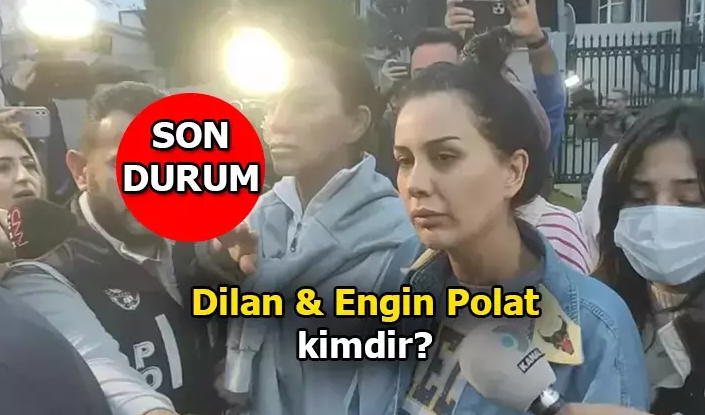

Engin Polat ve Dilan Polat'ın hakimlikteki ifadeleri ortaya çıktı. Dilan Polat ifadesinde, "Biz aileyiz örgüt diye bir şey olamaz. Eşimin ailesi kendi ailem olmadığı için benim ailem gibi oldu. Vergi konularını bildiğim kadarıyla mali müşavir ve muhasebecilerimiz hallediyor. Benim sahte fatura, naylon fatura gibi şeylerle bir ilgim yoktur" dedi.

Engin ve Dilan Polat çifti, Mali Suçlarla Mücadele Şube Müdürlüğü tarafından yapılan operasyonla gözaltına alındı.
Operasyon kapsamında toplam 24 şüpheli yakalanırken, 18 şüphelinin emniyetteki işlemleri tamamlanarak Anadolu Adliyesine sevk edildi. 6 şüphelinin emniyetteki işlemleri devam ediyor. Toplam 19 saat süren işlemlerin ardından 18 şüpheliden aralarında Engin Polat, Dilan Polat, Sıla Doğu, Sezgin Polat, Ahmet Gün, Can Doğu ve Can Polat olduğu 12 kişi tutuklanırken 6 şüpheli adli kontrol şartıyla serbest bırakıldı.
Anadolu 1. Sulh Ceza Hakimliği'nce tutuklanan 12 şüpheli arasında yer alan Dilan Polat, emniyetteki ifadesini tekrar ettiğini belirterek soyadı 'Polat' olan kişilerin eşinin akrabası olduğunu, soyadı 'Doğu' olan kişilerin ise kendi akrabası olduğunu ve diğer şüphelileri tanımadığını söyledi Dilan Polat ifadesinde "Benim ortağı olduğum şirketler güzellik merkezidir. Kadınlara güzellik ile ilgili hizmetler veriyoruz. Ben reklam yüzüyüm. Aile şirketlerimizin, ürün tanıtım reklamlarını yapıyorum, şube reklamlarını yapıyorum. Kendi güzellik merkezimde bulunan çalışanların eğitimleri ve disiplinleri ile ilgileniyorum. Benim asıl işim reklamdır. Ben sadece reklam yapıyorum" dedi.
İki tane küçük çocuğu olduğunu dile getiren Dilan Polat, çocuklarının kendisine çok bağlı olduklarını ve şirketlere ilişkin mali konularda hiçbir bilgisi olmadığını iddia etti. Polat ifadesinde, "Fatura kesmeyi bilmem. Şirketlerde mali müşavirler olduğunu biliyorum vergi işleri ile onların ilgilendiğini biliyorum. Bu şirketlere kara para diye tabir edilen yasadışı paraların geldiğini hiç bilmiyorum. Öyle bir şeye şahitlik etmedim. Ben bahsin ne olduğunu bilmem. Gelen paraların yasa dışı bahis ile ilgili bir ilgisi yoktur. Böyle bir şeyi kimseden duymadım. Biz aileyiz örgüt diye bir şey olamaz. Eşimin ailesi kendi ailem olmadığı için benim ailem gibi oldu. Vergi konularını bildiğim kadarıyla mali müşavir ve muhasebecilerimiz hallediyor. Benim sahte fatura, naylon fatura gibi şeylerle bir ilgim yoktur. Fatura kesmeyi bile bilmem işimizin ticari boyutu ile eşim ilgileniyor. Üzerime atılı suçları ben işlemedim bunlar ile bir alakam yoktur. Tutuksuz yargılanmama karar verilsin" dedi.
Dilan Polat'ın avukatı ise Dilan Polat'ın babasının annesini öldürdüğünü ve travmatik bir hayat yaşadığını belirterek müvekkilinin 17 yaşında Engin Polat'la evlendiğini söyledi. Müvekkilinin doğum fotoğrafçılığı yaparak iş hayatına girdiğini, zamanla sosyal medyadaki takipçi sayısının arttığını ve bunu değerlendirdiğini söyledi. 130 tane güzellik şirketinin olduğunu ve şirkete gelen paranın kaynağının belli olduğunu ifade etti.
Engin Polat ise ifadesinde, "Ben bu konu ile alakalı olarak daha önce ifade vermiştim. O ifademi aynen tekrar ederim. Polat soyadlı şüpheliler benim akrabamdır. Doğu soyadlı şüpheliler benim eşimin akrabalarıdır, Ahmet Gün bizim mali müşavirimizdir, ben Beyza ve Ceyda'yı tanımam. Gürsel Yılmaz benim dayım olur, Metin Yılmaz da benim dayım olur, Nilgül Yılmaz, Metin Yılmaz'ın eşidir. Yeşim Altınkalemdalkıran yönettiğimiz polikliniğin firma sahibidir, kendisi doktordur. Zekai Tepe diye birini tanımıyorum. Biz 6 firmadan oluşan bir aile firmasıyız. Güzellik merkezlerimiz vardır. Cihaz ve ürün satış firmamız var. Kozmetik satış firmamız var. İnşaat firmamız var, eğitim firmamız var. Orada sertifika vermekteyiz. Biz bir aile firmasıyız. 3 firmanın doğrudan yönetimi bendedir. Bu şirketler Dilan Polat A.Ş. Milda İnşaat Gayrimenkul A.Ş, D.Polat Estetik ve Sağlık Hizmetleri A.Ş'dir. diğer firmalarda babam, kardeşim ve Metin Yılmaz'ın eşi Nilgül Yılmaz'a aittir. Dipo Med. Medikal babamın firmasıdır, Rise And Shine firmasını vekaleten babam yönetmektedir. Özellikle benim yönetici olduğum 3 firmayı ben takip ediyorum. Diğer bir firmayı kardeşim Alper Kürşat, ikisini de babam Sezgin takip etmektedir"dedi.
Engin Polat ifadesinin devamında, "Birbirimiz ile fikir alışverişinde bulunuruz. İhtiyacımız olduğunda da borç alışverişinde de buluruz. Bu borçları elden verdiğimizde olur. Bizim tüm tedarikçilerimiz Türkiye'dedir, bunlar bilindik firmalardır. Bunlar bize faturalarını keser. Biz ürünlerimizi alırız. Biz örgüt değiliz, bir aile şirketiyiz. Vergisel bir hata yanlışlık yapmış olabiliriz. Aldığımız faturalarda sıkıntılı olanlar çıkabilir. Geçmişte de çıkmıştı. Biz aldığımız her faturanın malzemesini teslim almışızdır. Kimseye sahte fatura vermedik. Tüm satışlarımız faturalıdır. Paraları topladığım bir şirket genel olarak yoktur. Bu paralar ile araç, gayrimenkul aldığım olmuştur. Bunları yatırım için yaptım. Bunları para aklamak için yapmadım. Ticari faaliyetten kazandığım paralar ile aldım. Kredi fizibilitemi yükseltmek için 2022 yılı Aralık ayında Milda Gayrimenkulü kurduktan sonra bütün mallarımı oraya taşıdım. Bunun sebebi inşaat projesine başlayacak olmamdı. Ruhsat çıkmak üzereydi fakat bu olaylar nedeniyle hesaplarıma bloke gelmesi nedeniyle bu işlem durdu. İhtiyaç olduğunda elden bankalara para yatırıp çekebiliyoruz. İki firma arasında o anda ticaret olmadığı için nakit ihtiyacı olduğunda bu şekilde elden para alıp yatırıyoruz. Benim yasa dışı bahis ile bir ilgim yoktur. Ömrüm boyunca bahis bile oynamadım. Benim eski ikametgahım sistemde kayıtlıydı. Bu olaylar çıkınca tarafıma tebligat yapılmasında sıkıntı olmasın diye babamın adresine 10-15 gün önce adresimi taşımıştım. Ben üzerime atılı suçlamaları kabul etmiyorum, suçsuzum. Vergisel bir hata var ise de bunun cezasını ödemeye hazırım. Tutuksuz yargılanmama karar verilsin" ifadelerini kullandı.